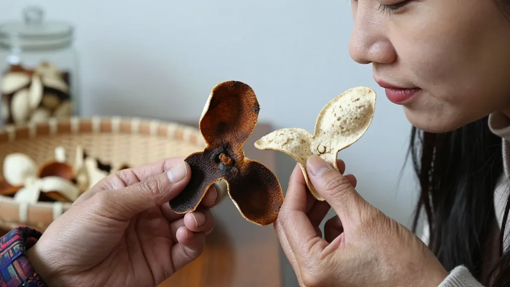
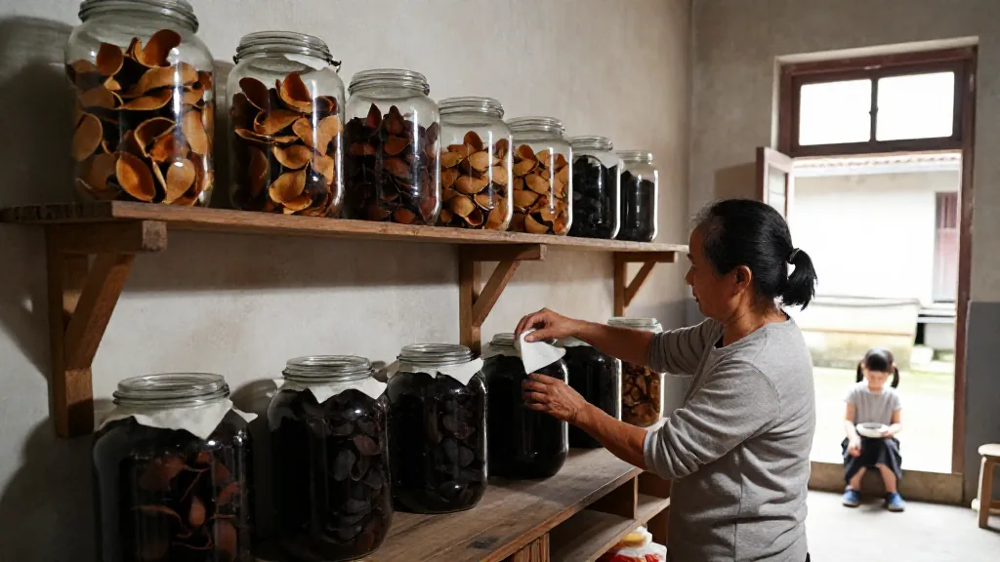
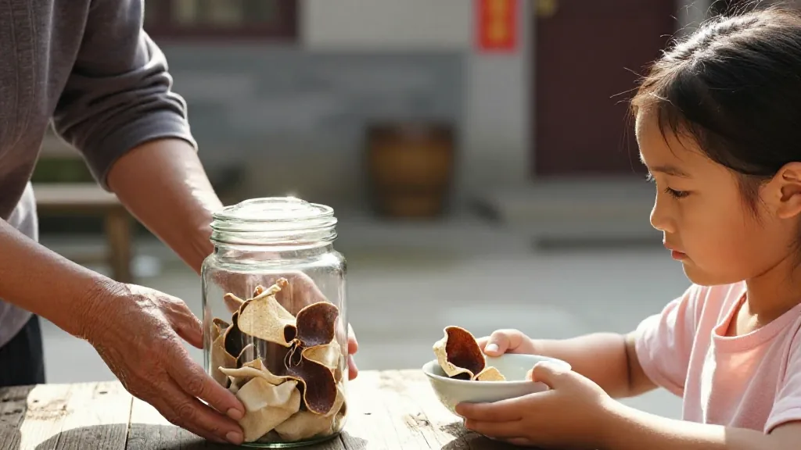

清晨的竹匾：存了十二個年頭的二紅皮
清晨六點，天還帶著一點青灰，新會城西的茶坑村已經醒過來了。
媽媽阿蓮蹲在天井邊，一塊一塊翻著竹匾上的陳皮。今天太陽好，秋老虎還在使勁，匾上的二紅皮被曬得微卷，散出一股淡淡的果香。這是她存下來的第十二個年頭。
女兒小敏從屋裡端出兩碗白粥，坐在門檻上，看著媽媽小心翼翼地把陳皮收進玻璃罐，蓋上蓋子之前，還用棉布把罐口擦了一遍。
「媽，今年這批皮，賣不賣？」
「賣什麼賣，」阿蓮頭也不抬，「這種十年以內的青澀皮，放出去也賣不上價。再等等。」
小敏抿了一口粥，沒再說話。
村裡的傳聞：外地仿皮鋪天蓋地
她知道媽媽的心事。今年開春以來，村裡到處都在傳——外地皮冒充新會皮的案子被央視曝光，廣州清平市場一公斤十年皮要兩千四到四千塊，但路邊攤上十塊錢一斤的「陳皮」堆得比山還高。村東頭的阿強叔，去年囤了三千斤皮，本想等價格再漲一漲，結果今年鮮果價掉了三成，外地仿皮又鋪天蓋地，他急得嘴上起了一串泡，最後只好低價出掉，虧了幾十萬。
「媽，現在外面亂得很，」小敏猶豫了一下，還是開口了，「直播間裡那些號稱三十年的老皮，六十九塊包郵，您信嗎？」
阿蓮這才抬起頭，看著女兒笑了一下。
「傻丫頭，這話還用問？」

外婆的木架：陳皮是時間的女兒
她指了指身後那面牆。牆上釘著一排老木架，每一層都用棉紙隔開，最底層那幾罐皮，顏色深得發黑，是她出嫁那年母親給的，已經快三十年了。「你外婆當年給我這罐皮的時候，什麼都沒多說，就講了一句——『陳皮是時間的女兒，急不得。』」
「時間的女兒。」小敏重複了一遍。
「是啊。你想想，茶枝柑從開花到結果，要十個月。摘下來開成三瓣皮，要曬。要在新會這種地方陳化三年，才能褪掉那股燥氣，叫『陳皮』。五年開始出陳香，十年入藥味才足，二十年往上，連柑絡都自己掉了，輕得像一片羽毛。」阿蓮說著，伸手從架子上取下一小撮皮，放進小敏的粥碗邊。
「你聞聞，這是十五年的皮。」
一股醇厚的陳香散開來，帶著一點點藥味，溫潤得像秋天的陽光。
「再聞聞這個，」阿蓮又從袋子裡抓出一小片外地仿皮，「這是去年村口老李從廣西拉回來的，批發價二十塊一斤。」
小敏湊近一聞，一股刺鼻的甜香撲過來，單薄得像糖水。
「區別在哪裡？」媽媽問。
小敏想了想：「一個像真的人，一個像畫出來的畫。」
阿蓮笑出了聲。

「你這丫頭，越來越會說話了。不過道理是這個道理。真東西，是時間一點一點養出來的，假東西，再怎麼蒸、烤、染色、催陳，第一口香氣就露餡。」
她頓了頓，又說：「今年七月，新會發了四項團體標準，從種植繁育、品鑒技術、到莊園建設，全鏈條都立了規矩。將來你再買皮，掃一掃『一皮一碼』，種在哪塊地、誰種的、樹齡多少、什麼時候陳化，清清楚楚。媽媽這輩子吃過的虧，不想讓你再吃一遍。」
小布袋的傳承：媽媽今天給你
小敏低頭看著碗邊那塊十五年的老皮，忽然問：「媽，那我以後也能存二十年給我女兒嗎？」
阿蓮愣了一下，然後眼眶有點熱。
她沒說話，只是把那罐快三十年的老皮，從最底層小心地取出來，倒了幾片進一個小布袋，遞給女兒。
「拿去。這是你外婆給媽媽的，媽媽今天給你。」
「記住——陳皮是時間的女兒，急不得。」

「滢滢在直播間常說，iPhone 17 開售那天，滿屏都在搶手機，可真正懂行的人知道，搶到手的機器明年就貶值，唯有存下來的老皮，一年比一年值錢。」滢滢姐在視頻號裡把這個故事講給粉絲聽，「科技產品追新，陳皮追舊，這就是時間給老實人的紅利。」
新會的味道：最樸素的嫁妝
院子裡，太陽已經升起來了。竹匾上的二紅皮在陽光下泛著柔和的光，遠處是茶坑村那片被三山環抱的柑園，西江和潭江的水汽從海上飄過來，鹹鹹的，帶著一點點甜。
這就是新會的味道。
也是一個母親，給女兒最樸素的嫁妝。
如果你也想給家人存一罐老皮，加滢滢微信，滢滢教你從第一年開始存，天馬村、茶坑村、梅江村核心產區任你選。每天早上 7 點到中午，來滢滢直播間看看真正的曬皮場；想多學鑑別技巧，看看新會陳皮的數字身份證。留言告訴滢滢：你最想給誰存一罐皮？